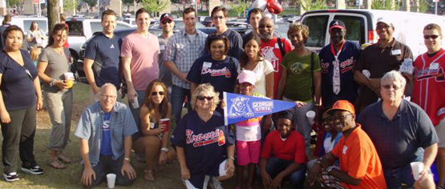

About GSU Alumni
Founded in 1929, the Georgia State University Alumni Association provides a comprehensive array of programs and services to serve alumni and keep them in touch, informed, involved and invested in their Alma Mater. With a constituency of over 175,000 graduates worldwide, the Alumni Association strives to strengthen the lifelong bond between the University and its alumni, and to help shape the future of Georgia State University.
In person address:
133 Dahlberg Hall
30 Courtland Street
Atlanta, Ga. 30303
404-413-2190 or 1-800-GSU-ALUM
Getting Involved
Be Present. Be Involved. Be the Difference.
Admissions, Recruitment, Retention and Pre-Arrival
Alumni volunteers support the efforts of Admissions and Relations with Schools to help recruit the most talented and diverse new Tritons. Volunteer opportunities are available locally and around the world.
Learn More
Career and Professional Development
Support current students and fellow alumni in their academic and professional endeavors by sharing your experiences and expertise in the following career-related opportunities.
Learn More
Academic Divisions and Undergraduate Colleges
Each year, we celebrate the transition of our incoming and graduating students at two signature programs and invite you to join us for these important milestones in the collegiate journey.
Learn More
Leadership
Alumni volunteers can serve as leaders in various capacities. From regional club leaders to our Board of Directors, volunteers are making a difference and helping to shape the future of UCSD Alumni.
Learn More
Give to GSU
Different Ways to Give:
Support Scholarships
The gift of education has the power to transform lives. For a first generation college student, a scholarship can change a life's trajectory.
Learn More|Give Now
Research and Discovery
GSU is a top-tier academic medical center, and a regional leader in improving health through research, education and patient care. Its commitment is to continue its quest to cure disease, seek better treatments and train the next generation of physicians and scientists. Your support makes this possible.
Learn More|Give Now
Many Ways to Make a Differece
Whether your passion is for scholarships, fellowships, your college or a specific program or department at UC San Diego, there are many ways that you can make a difference for today’s students and future generations. Discover additional opportunities and select an area most meaningful to you.
Where to Give
Events

Georgia State Alumni events cover a wide spectrum. Ongoing programs include our bi-monthly Speed Networking & Business Card Exchanges as well as events at the Fernbank Museum's IMAX theater with Martinis & IMAX. We also host events at the Atlanta Botanical Garden, the Atlanta History Center, Center for Puppetry Arts, Theatrical Outfit, and the Georgia Ensemble Theater. A popular new event has been our 3rd Thursday social events, held at various restaurants across the city.
For further information, please call the Alumni Association office at 404-413-2190.